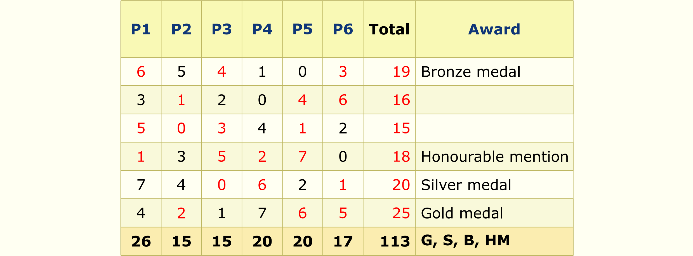

Solution: Sudok-IMO: A Unique Performance
Answer: SPORTY
Written by Ross Atkins and Sean Gardiner
As suggested by Sudok-IMO in the title, this puzzle is not just a partially-filled grid of scores for a theoretical IMO team, but a Sudoku-inspired logic puzzle.
The rules are as follows: we need to place a digit from 0 to 7 inclusive into each blank cell in the columns P1 through P6 so that no digit is repeated in a row or column (also clued by unique in the title), the sum of the digits in each column matches the bottom row, and the award matches the scores in the row for the relevant problem. In particular, the rows with gold, silver and bronze medals should correspond to the top three total scores in order from first to third (which should not have ties); the row with the honourable mention should have a 7, and the rows without an award should not have a 7.
There is one final set of blank cells, the Total column. Summing the scores for the contestants in order gives 19, 16, 15, 18, 20, and 25. To obtain an answer from this, we use the A1Z26 cipher (which is included on the top and bottom of the puzzle: it turns the number k into the kth letter of the English alphabet) to obtain the answer SPORTY.
Click to show the solution to the logic puzzle
